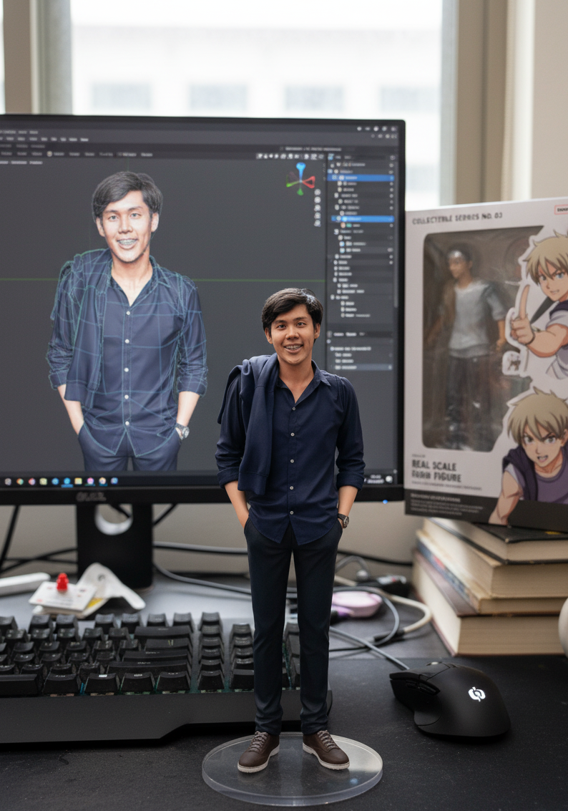
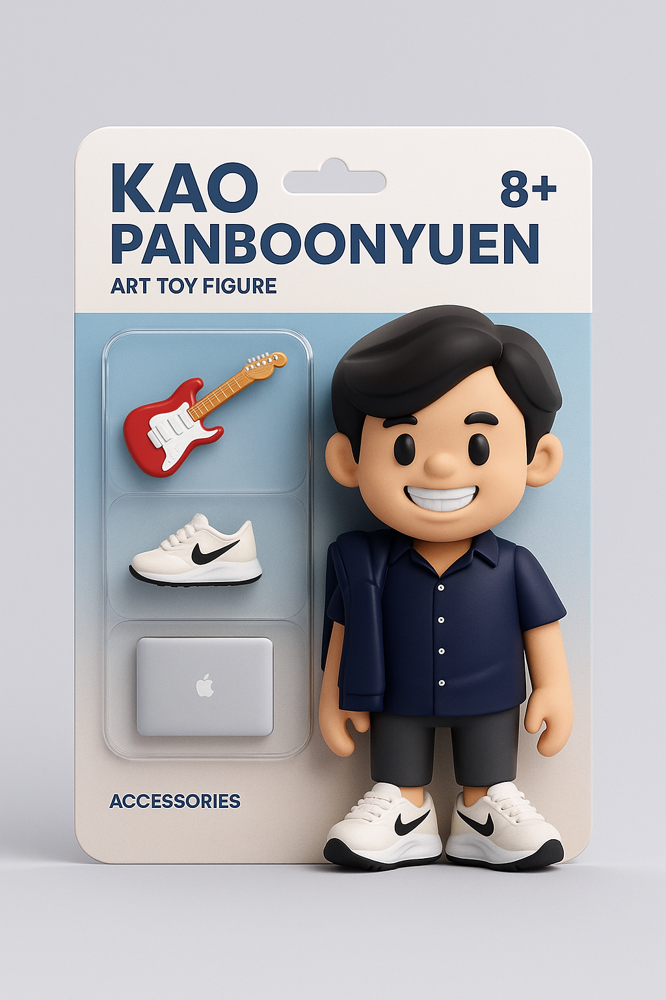

GET TO KNOW ME BETTER
 Dr. Teerapong Panboonyuen (Kao), ดร. ธีรพงศ์ ปานบุญยืน (เก้า)
Dr. Teerapong Panboonyuen (Kao), ดร. ธีรพงศ์ ปานบุญยืน (เก้า)
Abstract
Hello! I’m Teerapong “Kao” Panboonyuen, a Senior Research Scientist at MARSAIL and a Postdoctoral Fellow at Chulalongkorn University, where I explore the intersection of rigorous mathematical foundations and transformative AI applications. I hold a Ph.D. in Computer Engineering with a strong focus on optimization theory, statistical learning, and deep neural architectures. My research bridges Vision Transformers, self-attention mechanisms, GANs, and stochastic processes, with a strong emphasis on remote sensing, geospatial analytics, and real-world predictive systems. I am particularly passionate about advancing long-range dependency modeling, inductive biases, and efficiency trade-offs, ensuring that models are not only accurate in controlled settings but also scalable and robust in real-world deployments. In teaching and mentorship, I emphasize transformer architectures, attention heads, positional encoding, and efficiency-aware optimization techniques, empowering students to apply advanced theory to impactful applications. My work spans OCR, computer vision for insurance technology, semantic segmentation in remote sensing, and generative modeling, all grounded in practical AI system design. I believe the future of AI lies in merging mathematical precision with creativity and real-world adaptability—from optimizing Transformers and refining generative models to developing predictive systems that address environmental, geospatial, and industrial challenges. My mission is simple to create AI that matters.
A quick glimpse at the person behind my work
This profile photo represents more than just a face—it reflects the passion, curiosity, and dedication I bring to everything I do. Whether I’m writing code, mentoring students, or diving into cutting-edge AI research, I approach it all with the same drive and focus. From lecture halls at Chula to stages at international conferences, my goal is to help shape technology that’s smarter, more human, and genuinely impactful.
Big thanks to modern AI for sharpening up these visuals—helping them reflect the professional tone that best represents who I am.

I tried experimenting with different outfit styles, but in my actual work life—whether in a tech company or during my postdoc at Chulalongkorn University—I usually just wear a comfortable t-shirt. The only time I switch it up a bit is when I have a presentation, and even then, it’s still just a t-shirt. The only time I wore a suit was when I had the honor of attending the GYSS2025 event where we welcomed HRH Princess Maha Chakri Sirindhorn. That was such a proud and unforgettable moment for me.
Fun fact: I had that suit tailored for my PhD graduation at Chulalongkorn, and it was really special to be able to wear it again for another royal audience with Her Royal Highness. I felt deeply honored and grateful.
But here’s another side of me—outside the labs and research. This candid travel photo is completely untouched by AI. No filters, no edits—just me exploring new places and enjoying life. Whether I’m wandering hidden streets in Japan or taking in the quiet beauty of nature, these moments remind me of the balance between ambition and reflection.


P.S. Here’s a fun little AI-generated art toy version of me—I was just curious to see what I’d look like as a cartoon character.
 
Beyond the Research
So, who am I beyond the algorithms and equations?
I’m a tech enthusiast who believes in the power of innovation to make the world a better place. When I’m not deep into neural networks, you’ll likely find me on the track, in the pool, or out cycling—training for my next IRONMAN triathlon. Endurance sports like running, marathons, and triathlons keep me grounded. For me, they’re a reminder that with grit, discipline, and perseverance, anything is possible.
I’m also a lifelong learner—always curious about the latest trends in AI, technology, and science. But learning doesn’t stop at theory. I’m passionate about sharing knowledge, volunteering, and engaging with communities that foster growth and inspiration.
If you’d like to follow along with my journey, check out My WordPress Blog.
And if you ever want to swap stories about the newest gadgets, explore the latest research, or just chat about life, don’t hesitate to reach out at panboonyuen.kao@gmail.com.
Kao Panboonyuen
Teerapong Panboonyuen
My research focuses on leveraging advanced machine intelligence techniques, specifically computer vision, to enhance semantic understanding, learning representations, visual recognition, and geospatial data interpretation.